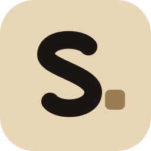

Calm, private medication reminder for adults working through hard things. Feel: calm, honest, warm, quietly hopeful, serious. Discreet on a home screen: no pills, crosses or brains. Must work as app icon, one-colour notification icon and at 16 px.
The S of Steady, drawn as six marks: each mark is a day, and together they spell steady.
A spirit level with its bubble at rest in the middle: balanced, steady, and nothing on it says "medication".
The app's own voice — lowercase, ending in a full stop — with the full stop drawn as a marked-day block.

Colour hint: the app's beige, the block in its deeper tone.